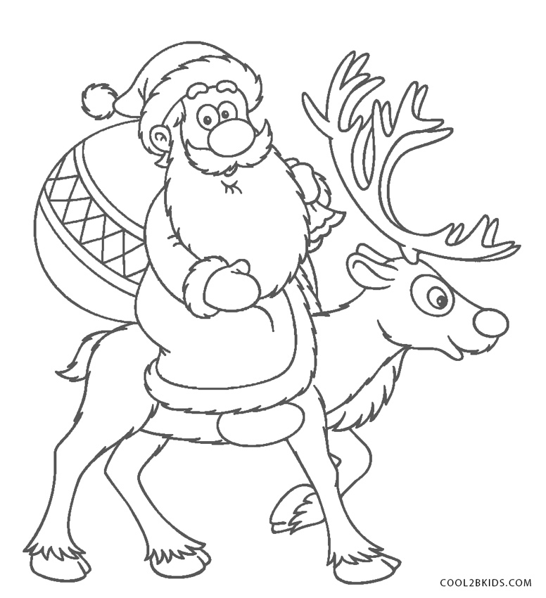
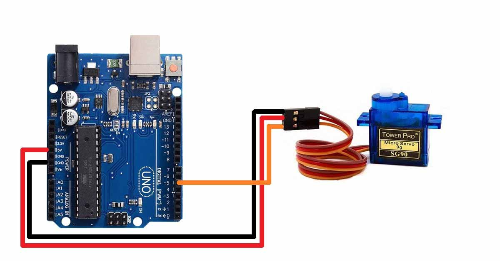

4 — Concevoir et animer deux automates plats
Votre mission
Vous êtes quatre élèves. Vous devez concevoir et fabriquer deux personnages de Noël en carton découpé au laser, puis les animer à l'aide de servomoteurs pilotés par Arduino ou ESP32. Les deux personnages devront tenir dans la vitrine commune de diamètre extérieur maximal 200 mm, en tenant compte de leurs mouvements et des autres éléments.
4 élèves16 hSolidWorksDécoupe laser2 servomoteurs minimum
1. Quatre références graphiques
Comparez les deux styles de nounours et les deux représentations du cerf. Choisissez pour chaque automate une silhouette qui peut être découpée dans du carton sans éléments trop fins.
Idée : faire saluer le bras levé.
Idée : faire bouger une patte.

Idée : articuler une patte ou la tête.

Idée : simplifier le dessin avant découpe.
Conseil : le nounours debout et le cerf en silhouette sont les références les plus simples pour une première conception mécanique. Le dessin du Père Noël sur le renne est plus complexe et nécessite une simplification importante.
2. Répartition des quatre élèves
| Binôme | Mission | Responsabilités partagées | Validation |
|---|---|---|---|
| B1 + B2 | Nounours | CAO, découpe, assemblage, montage du servo, programmation et essais | Un mouvement fiable et répétable |
| B3 + B4 | Cerf | CAO, découpe, assemblage, montage du servo, programmation et essais | Un mouvement fiable et répétable |
| Tous | Intégration | Interfaces mécaniques, branchements, tests simultanés et dossier technique | Deux automates fonctionnent ensemble |
Les deux élèves de chaque binôme doivent participer à la conception et aux essais de programmation.
3. Progression chronologique — 16 heures
| Semaine | Durée | Travaux attendus | Livrable / critère de réussite |
|---|---|---|---|
| S1 — Analyser | 1 h | Observer les images, choisir les personnages et un mouvement simple par automate. | Choix argumentés |
| 1 h 30 | Dessiner les pièces fixes et mobiles, positionner les pivots et proposer une liaison servo–personnage. | Croquis des deux mécanismes | |
| 1 h 30 | Tester un servo avec un programme minimal ; mesurer les débattements et transmettre les encombrements à D. | Servo testé, fiche d'interface | |
| S2 — Concevoir | 2 h | Modéliser les pièces simplifiées sur SolidWorks, prévoir les pivots et les fixations. | Pièces CAO enregistrées |
| 1 h | Préparer les fichiers DXF et vérifier les dimensions de découpe. | DXF exploitables | |
| 1 h | Découper un prototype d'articulation et tester les jeux. | Pivot libre sans blocage | |
| S3 — Fabriquer | 1 h 30 | Découper et assembler les deux automates. | Deux mécanismes mobiles |
| 1 h 30 | Fixer les servos, créer les liaisons mécaniques et programmer les mouvements. | Deux animations opérationnelles | |
| 1 h | Tester plusieurs cycles, corriger les frottements et limiter les angles. | Pas de collision ni de blocage | |
| S4 — Valider | 1 h 30 | Installer les personnages avec D et vérifier le fonctionnement simultané. | Encombrement respecté |
| 1 h 30 | Vérifier l'alimentation, finaliser les essais, les fichiers et les programmes commentés. | Dossier et tests complets | |
| 1 h | Préparer et présenter la démonstration de 5 minutes, participer à la restitution. | Présentation réalisée |
4. Questions de conception
4 bis. Ressource technique — piloter un servomoteur
Avant de réaliser les mouvements des personnages, étudiez le principe de commande d’un servomoteur avec une carte Arduino. Le même principe pourra être adapté à une carte ESP32 en tenant compte de son brochage et de sa bibliothèque de programmation.
Schéma de référence

Si le schéma ne s'affiche pas, demander le fichier arduino+servo.jpg à l’enseignant.
Vidéo d'accompagnement
Visionner la vidéo YouTube sur la commande du servomoteur
Après avoir étudié ces ressources, réalisez un premier essai avec un seul servomoteur, puis adaptez le programme pour commander le mouvement de votre personnage.
5. Matériel et ressources nécessaires
| Fourni par l'enseignant | À réaliser par les élèves |
|---|---|
| Quatre images de référence, carton et accès à la découpe laser | Silhouettes simplifiées, pièces CAO et DXF |
| Deux servomoteurs, palonniers, fixations et tringleries | Articulations, supports et mécanismes |
| Arduino ou ESP32, alimentation régulée adaptée aux servos, fils | Câblage de commande, essais et programme commenté |
| Programme minimal de test servo et tutoriel SolidWorks / DXF | Animations et protocole de validation |